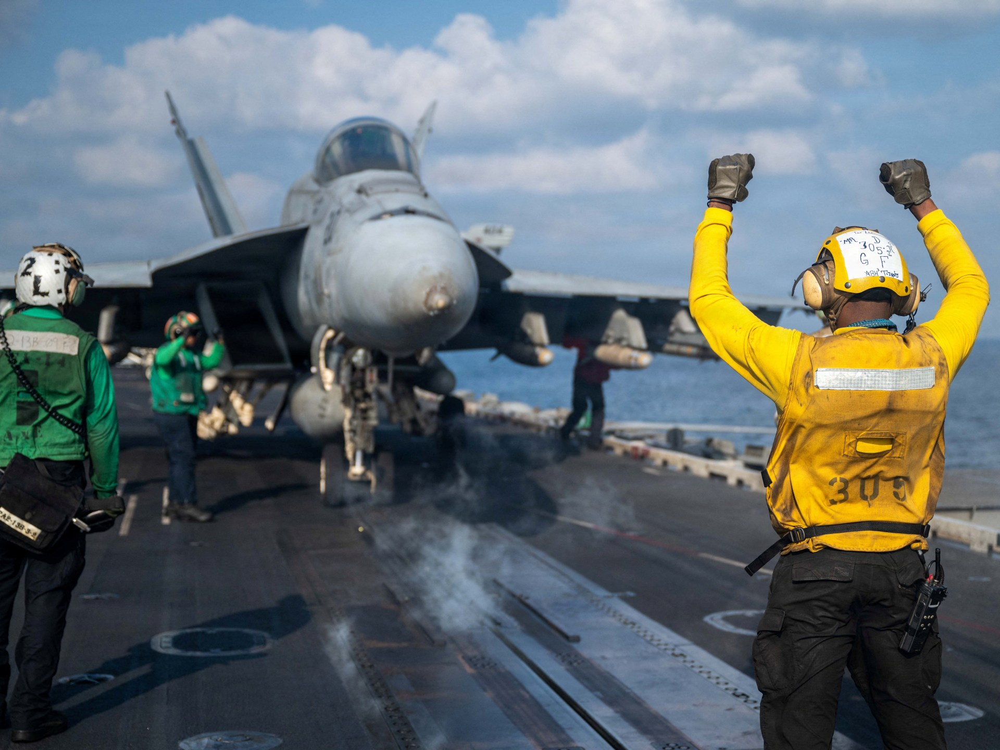
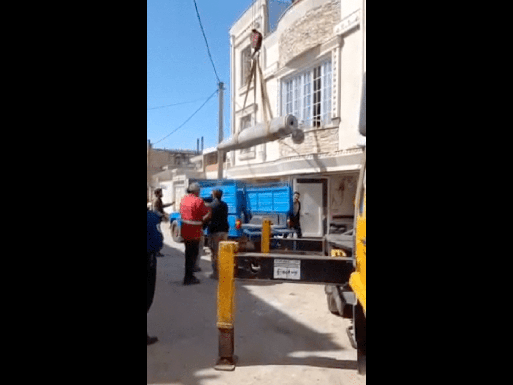
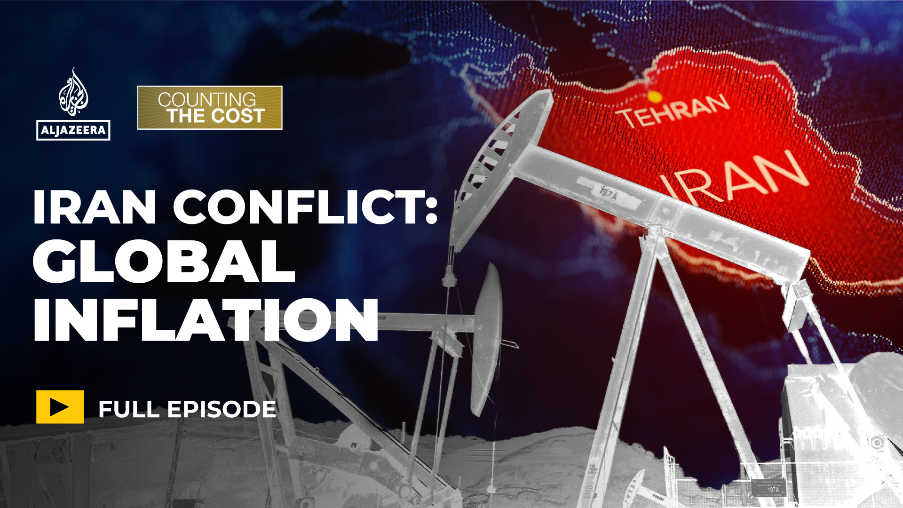
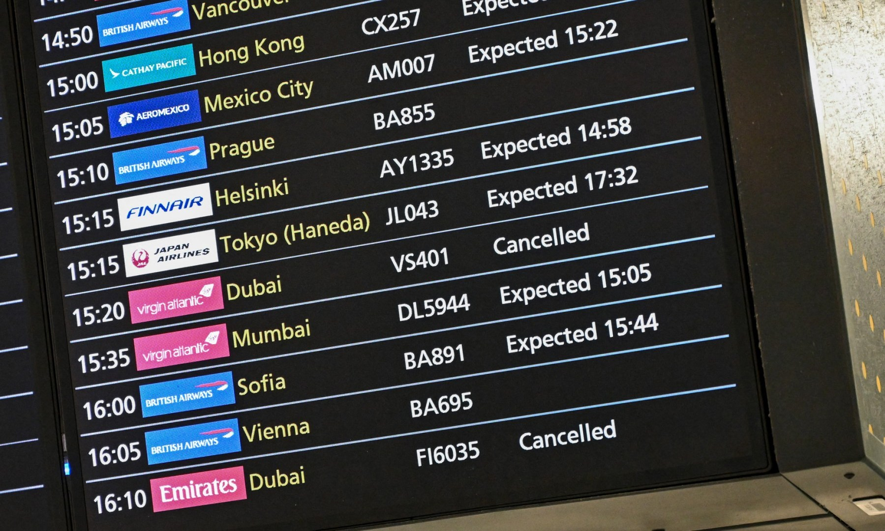
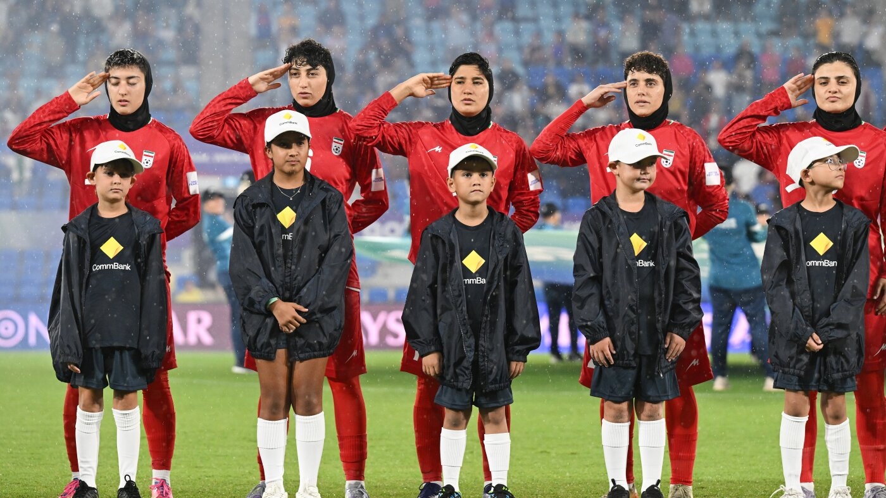
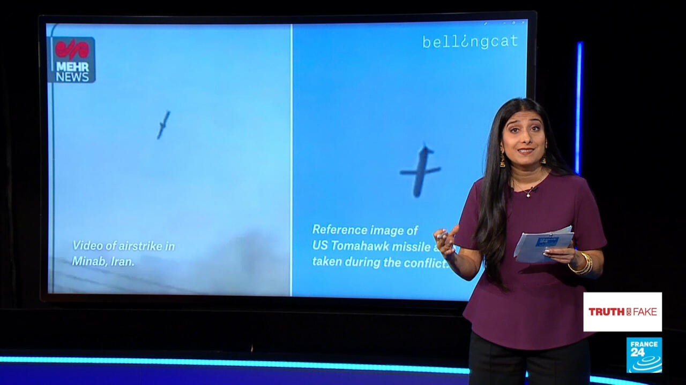
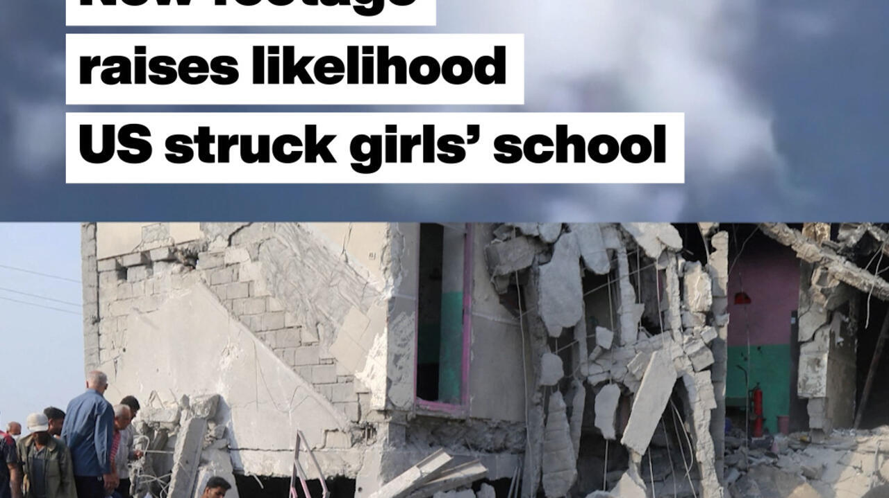

AI Analysis
Today in the News
- U.S. Defense Secretary Pete Hegseth announced what he called the "most intense" day of U.S. strikes on Iran since the war began 11 days ago, stating the objective is to permanently eliminate Iran's capacity to obtain nuclear weapons. The Pentagon confirmed 140 U.S. service members have been wounded and seven killed in the conflict so far, with eight currently in critical condition.
- Video analysis by fact-checking experts geolocated a U.S. Tomahawk cruise missile striking a naval base adjacent to a girls' elementary school in Minab, southern Iran, where Iranian authorities reported 168 people were killed. The U.S. and Pentagon have attributed civilian casualties to Iran, while President Trump has sought to deflect responsibility for the mounting civilian death toll, which multiple sources place above 1,800.
- Lebanon's President Joseph Aoun called for direct talks with Israel on "permanent arrangements for security and stability" along the border, while accusing Hezbollah of actions that harmed Lebanon. Israeli strikes expanded to central Beirut, hitting a hotel Israel said housed Iranian Quds Force operatives; Iran said the individuals were diplomats. More than 667,000 people have been displaced within Lebanon.
- Mojtaba Khamenei, 56, was named Iran's new supreme leader, succeeding his father Ayatollah Ali Khamenei. Pro-establishment rallies in support of the appointment took place in Iranian cities even as strikes continued. Analysts and Iranian citizens described deep division over the succession, with some viewing it as a sign of continuity rather than reform.
- Australia granted humanitarian visas to five members of Iran's women's national soccer team who were in the country for a tournament when the war began. The players had faced criticism from Iranian state media for not singing the national anthem during a match, with one commentator calling them "wartime traitors."
- The Strait of Hormuz is effectively closed to commercial shipping, driving oil prices near $120 per barrel. The World Health Organization warned of health risks from "black rain" caused by strikes on Iranian oil facilities. Pakistan announced emergency economic measures including temporary school closures and government salary cuts to manage the impact of rising fuel costs.
Forward Look
What to Expect Next
- Historically, the closure or severe disruption of the Strait of Hormuz — through which roughly 20% of global oil passes — has rapidly cascading economic effects; analysts expect continued oil price volatility and potential fuel shortages in import-dependent countries across South and Southeast Asia if shipping remains blocked in the coming days.
- Lebanon's call for direct talks with Israel, combined with its public criticism of Hezbollah, mirrors patterns seen in past Lebanese political realignments during wartime. Analysts expect intensified diplomatic efforts, potentially mediated by France or the U.S., though historical precedent suggests Hezbollah's response and Israeli preconditions could delay substantive negotiations.
- The leadership transition to Mojtaba Khamenei during active hostilities is historically unprecedented for Iran's supreme leader position. Analysts expect the new leader may face pressure both to consolidate internal authority and to signal either defiance or openness to negotiation, with the regime's response in the coming days seen as a critical indicator of Iran's war posture.
- President Trump's conflicting public statements — promising the war will end "very soon" while simultaneously threatening further escalation — suggest, based on established patterns in U.S. military campaigns, that internal debate over the conflict's scope and duration is ongoing. International pressure, including from Germany and China, may intensify calls for a defined exit strategy.
- The confirmed damage to Iranian detention centers holding political prisoners, combined with the internet blackout and civilian casualties, is likely to draw increased scrutiny from international human rights organizations and could become a significant factor in diplomatic negotiations, as has occurred in past conflicts involving civilian infrastructure damage.

The Guardian
2026-03-09
Hope and solidarity with those trying to stay alive in Iran
Read full article →
Desmond Hewitt responds to an article by an Iranian citizen living in Tehran in the midst of the ongoing war

The Guardian
2026-03-10
Iranians living in UK tell Starmer that war will only strengthen Tehran regime
Read full article →
Nazanin Zaghari-Ratcliffe among more than 100 signatories to letter urging PM not to get drawn further into the conflict

The Guardian
2026-03-10
Labor MPs quietly alarmed by Albanese government’s response to US-Israel strikes on Iran
Read full article →
Several MPs question why the party rushed
to endorse strikes that were likely in breach of international lawFollow
our Australia news live blog for latest updatesGet our breaking news
email, free app or daily news podcast

The Guardian
2026-03-09
The war on Iran is already upending the Middle East. Look to the Gulf states to see how
Read full article →
Countries such as Saudi Arabia, Qatar and the UAE are finding their carefully projected image of stability has been blown away
Bias Analysis
What makes it biased:
This is an opinion or editorial piece, not objective reporting. The author's personal viewpoint shapes the narrative.
This is an opinion or editorial piece, not objective reporting. The author's personal viewpoint shapes the narrative.
Who this benefits:
The Guardian leans Center-left. Tends to be sympathetic to Palestinian civilian perspectives and critical of Israeli military operations.
The Guardian leans Center-left. Tends to be sympathetic to Palestinian civilian perspectives and critical of Israeli military operations.

The Guardian
2026-03-10
Pete Hegseth warns of ‘most intense’ day of US strikes on Iran yet
Read full article →
Pentagon chief spoke with Gen Dan Caine at
a press conference and blamed Iran for civilian casualties Sign up for
the Breaking News US email to get newsletter alerts in your inbox

The Guardian
2026-03-10
Fuel supply and Middle East conflict dominate political debate – as it happened
Read full article →
Follow updates live‘I’m buggered’: David
Littleproud resigns as leader of National party as Matt Canavan flags
tiltGet our breaking news email, free app or daily news podcast

BBC News
2026-03-10
War expands to central Beirut as Israeli strike kills Iranians in luxury hotel
Read full article →
Israel's military says it targeted Quds
Force operatives after a return to war with Lebanon's Hezbollah
movement, but Iran says they were diplomats.
BBC News
2026-03-10
'I just want to be able to sleep': Attacks in Iran rock cities and cut power
Read full article →
Iranians in Tehran and Karaj tell the BBC they are exhausted and struggling to sleep after 10 days of Israeli and US attacks.

BBC News
2026-03-10
Five Iranian footballers granted Australian visas after anthem protest
Read full article →
Concern has grown for team after one critic called them "wartime traitors" for failing to salute during the Iranian anthem.

BBC News
2026-03-10
Lebanon calls for talks with Israel on plan to end Hezbollah conflict
Read full article →
President Aoun outlines a path towards "permanent security and stability", as Israeli strikes targeting Hezbollah continue.

BBC News
2026-03-10
GPS jamming: The invisible battle in the Middle East
Read full article →
GPS jamming has made navigation hazardous in the Gulf, spurring efforts to develop alternatives.
BBC News
2026-03-09
Iran's new leader has never been tested. He now faces an existential battle
Read full article →
Mojtaba Khamenei, 56, enters power as the Islamic republic faces its most serious crisis.

BBC News
2026-03-09
Strikes shake Iran cities as crowds rally in support of Mojtaba Khamenei
Read full article →
Iran and Israel continue to exchange attacks, as supporters of Khamenei celebrate the decision to name him supreme leader.
BBC News
2026-03-09
Iranians deeply divided over Mojtaba Khamenei's rise to power
Read full article →
While pro-establishment crowds celebrate
Khamenei's appointment as his father's successor, others believe it
signals no change to how Iran is ruled.

BBC News
2026-03-09
US missile hit military base near Iran school, video analysis shows
Read full article →
A US Tomahawk missile hit a military base
near a primary school in southern Iran where Iranian authorities said
168 people were killed, expert video analysis shows.

BBC News
2026-03-10
In maps: 11 days of strikes across the Middle East
Read full article →
US-Israeli strikes hit Iran and Gulf states intercepted retaliatory strikes overnight as the war continues into an eleventh day.

Al Jazeera
2026-03-10
Around 140 US service members wounded in Iran war, Pentagon says
Read full article →
US Department of Defense says eight service members in critical condition as White House hails progress of assault.

Al Jazeera
2026-03-10
Unexploded missile extracted from house in western Iran
Read full article →
Rescue workers carefully extracted an unexploded missile from a house in Kuhdasht City, following US-Israeli airstrikes.

Al Jazeera
2026-03-10
Lebanese priest killed by Israeli tank fire
Read full article →
A Maronite Catholic priest has been killed by Israeli tank fire after it targeted a home in southern Lebanon.

Al Jazeera
2026-03-10
Could the US-Israel war with Iran fuel global inflation?
Read full article →
Oil prices are swinging as markets react to every twist in the conflict.

Al Jazeera
2026-03-10
Is control of Iran’s natural resources a factor in US strategy?
Read full article →
Iran has vast oil as well as gas reserves and is a key supplier to China.
Al Jazeera
2026-03-10
German Chancellor concerned US-Israel have no exit plan for Iran war
Read full article →
German Chancellor said there appears to be “clearly no joint plan” to bring the US-Israeli war on Iran to an end.

Al Jazeera
2026-03-10
Five stories you may have missed amid US-Israeli war on Iran
Read full article →
Here are some news stories you might not have seen amid the United States-Israel war on Iran.

Al Jazeera
2026-03-10
Moment ‘Hezbollah missile’ strikes Israeli radar station
Read full article →
Israel has released video it says shows the moment a missile fired by Hezbollah struck a satellite and radar station.

Al Jazeera
2026-03-10
WHO warns of health risks from ‘black rain’ in Iran
Read full article →
The World Health Organization warned that “black rain” caused by strikes on Iran’s oil facilities pose health risks.

Al Jazeera
2026-03-10
Global airlines hike ticket prices as Iran war sends costs soaring
Read full article →
The war has sent oil prices surging, upending global travel and pushing airline ticket costs on some routes sky-high.
No image
New York Times
2026-03-10
Iran Live Updates: Nearly 700,000 Flee Israeli Strikes in Lebanon
Read full article →
Lebanese leaders and aid groups warned of a
growing humanitarian crisis as Israel targeted Hezbollah. The Pentagon
said 140 American service members had been wounded, eight severely, in
the war.
No image
New York Times
2026-03-10
New Supreme Leader Inherits Sprawling, Secretive Office That Dominates Iran
Read full article →
His father, Ayatollah Ali Khamenei, had
turned what was traditionally a religious affairs office into a shadowy
national security juggernaut.
No image
New York Times
2026-03-09
Fear and Hope for Iranians Trapped Between Bombs and Defiant Rulers
Read full article →
Many in Iran feel helpless in the face of
their entrenched system, and some are becoming increasingly embittered
by the fierce American and Israeli bombardment.
No image
New York Times
2026-03-10
Australia Grants Humanitarian Visas to 5 Members of Iranian Women’s Soccer Team
Read full article →
Concern for the safety of the players had
grown after Iranian state media criticized them for not singing the
national anthem at a game in Australia.
No image
New York Times
2026-03-10
Trump Tries to Sidestep Blame for Any Civilian Deaths in Iran
Read full article →
The president and the Pentagon have cast
blame on Iran for the mounting toll. More than 1,800 people have died in
the war, including many civilians.
No image
New York Times
2026-03-10
War in Iran Could Lead to Food Shortages in Region, Experts Warn
Read full article →
Some residents of Lebanon, Gaza and Iran
are reporting shortages of food, rising food prices and other
disruptions to food supplies as the conflict in the Middle East
continues.
No image
New York Times
2026-03-10
U.S. Showers Iran With Bombs in Most Intense Strikes of the War, Pentagon Says
Read full article →
Iranians cowered under the barrage as Pete
Hegseth, the U.S. defense secretary, said the U.S. aimed to wipe out
Iran’s capacity to obtain nuclear weapons “forever.”
No image
New York Times
2026-03-10
Imprisoned in Iran, and Under Bombardment
Read full article →
Iranian detention centers, some holding
people swept up in a government crackdown on protests along with other
prisoners, have been damaged in the U.S.-Israeli airstrikes.
No image
New York Times
2026-03-10
Pentagon Says 140 Service Members Have Been Injured in Iran War
Read full article →
Eight Americans have been seriously
wounded, military officials said, but the bulk of the injured have
already returned to duty. Seven Americans have been killed.
No image
New York Times
2026-03-10
How Long Will the Iran War Last? Trump Offers Conflicting Answers.
Read full article →
Now 11 days into an expanding military
campaign, President Trump and his officials have given conflicting
indications on how long the United States intends the war to last.

NPR
2026-03-10
Iran war latest: Hegseth says today marks heaviest bombing yet
Read full article →
Defense Secretary Pete Hegseth says
Tuesday marks the most intense U.S. bombing yet in the Iran war. The 11
days of fighting have spooked oil markets, and the Strait of Hormuz is
effectively closed.
NPR
2026-03-10
Why Russia is assisting Iran's military
Read full article →
NPR's Juana Summers speaks with Nicole
Grajewski, professor at Sciences Po and author of Russia and Iran, about
Russia's reported support of Iran's military.

NPR
2026-03-10
Photos from Iran and across the Middle East as the war enters Week 2
Read full article →
More than a week of the U.S. and Israel's
war against Iran has dragged in global powers, upended the world's
energy and transport sectors, and brought chaos to usually peaceful
areas of the region.

NPR
2026-03-10
Trump gives mixed signals on Iran war. And, how Epstein built ties to scientists
Read full article →
President Trump provided conflicting
messages about when the U.S. and Israel's war with Iran will end. And,
NPR investigates how late convicted sex offender Jeffrey Epstein
leveraged ties with scientists.
NPR
2026-03-10
The U.S. vowed its 'most intense day of strikes inside Iran'
Read full article →
Defense Secretary Pete Hegseth said the
Pentagon was giving President Trump "maximum options" and that the war
will not be "endless," a day after the president gave mixed signals
about progress.

NPR
2026-03-10
Lebanon wants talks with Israel to end the fighting
Read full article →
Lebanon says it's ready to talk to Israel to end the fighting, as the war in Iran intensifies.

NPR
2026-03-10
Australia grants asylum to 5 members of the Iranian women's soccer team
Read full article →
Australia has granted asylum to five
members of the Iranian women's soccer team who were in the country for a
tournament when the Iran war began.
NPR
2026-03-09
As U.S. and Israel strike Iran, China's foreign policy experts question Washington
Read full article →
The U.S. and Israeli joint attacks on Iran
have prompted alarm and intense discussion among China's foreign policy
elite as they prepare for a U.S. presidential visit.

France 24
2026-03-10
Video shows US Tomahawk missile strike next to bombed Iranian school
Read full article →
A newly released video by Iran’s Mehr News
Agency - verified and geolocated by fact-checking experts - shows an
American Tomahawk cruise missile striking a naval base next to the girls
elementary school…
France 24
2026-03-10
Trump's war: What's the endgame in Iran?
Read full article →
Why this war of Donald Trump's choosing?
As the death and destruction widen in Iran and around the region, as oil
and gas markets take fright, the US president’s reasons for launching
what his administration…

France 24
2026-03-10
Kharg Island: Iran’s ‘untouchable’ oil artery?
Read full article →
It is the centerpiece of Iran's oil
industry. Located some 25 kilometers, or 15 miles, off the shore of
mainland Iran, Kharg Island is a small but vital strip of land, for the
Iranian regime. Around 90% of its crude oil exports pass through here.
FRANCE 24's Solange Mougin reports.

France 24
2026-03-10
Israeli strikes pound south of Beirut, displacing more than 100,000 in a day
Read full article →
In the space of 24 hours, more than
100,000 people fled in #Lebanon amid #Israeli strikes. About 667,000
people have been displaced since the start of the attacks, which started
following that of #Hezbollah on #Israel.

France 24
2026-03-10
New footage raises likelihood the US struck Iranian girls’ school
Read full article →
New footage shows what an expert
investigative group says is likely an American Tomahawk missile hitting a
compound in Minab, southern Iran, metres from the school where a deadly
unclaimed blast killed over 165 people at the start of the war in the
Mideast. It comes as mounting evidence points to US culpability for the
strike.
France 24
2026-03-10
Iran targeted by fresh strikes as US warns of 'most intense day'
Read full article →
Several cities in #Iran were targeted by
fresh Israeli strikes as the US-Israeli campaign carried on in the
country. US Secretary of Defence Pete Hegseth on March 10 warned it
would be the "most intense day" of strikes in the country.

France 24
2026-03-10
Kharg Island: Iran’s ‘untouchable’ oil artery?
Read full article →
Some 25 kilometres off Iran’s southern
coast lies a tiny island overrun by pipelines, terminals and storage
facilities. This is Kharg Island – the beating heart of Iran’s oil
exports – and a seemingly…

France 24
2026-03-10
Five Iranian women football players granted asylum in Australia
Read full article →
Australia on Tuesday granted humanitarian
visas to five Iranian women soccer players after they sought asylum,
fearing persecution on their return home for their refusal to sing the
national anthem at an Asia Cup match. "Australians have been moved by
the plight of these brave women," Australian Prime Minister Anthony
Albanese told a news conference in Canberra a day after police helped
extract the women from their Iranian government handlers.

France 24
2026-03-10
Iran war stifles Hormuz shipping: ‘Unprecedented’ impact on oil & global economy
Read full article →
FRANCE 24's François Picard welcomes Jon
Marks, author, political scientist and chairman/founder of Cross-border
Information. Having followed energy markets for decades, Marks warns
that we are in uncharted…
France 24
2026-03-10
Trump says war in Iran will end 'soon' – but threatens to escalate
Read full article →
Asked about how long US strikes in #Iran
would last for, Donald #Trump assured the #war would end 'very soon'.
But soon after, he threatened to escalate the conflict by striking Iran
"twenty times harder" if it stopped the oil flow going through the
Strait of #Hormuz.

DW News
Lebanese brace for more war as Hezbollah-Israel attacks escalate
Read full article →
The widening Middle East war has triggered
a new displacement crisis in Lebanon. Amid ongoing attacks, Beirut has
postponed parliamentary elections. What is happening to people on the
ground?

DW News
Pakistan to close schools, cut spending over Iran war
Read full article →
Pakistan announced fuel- and cost-saving
measures to mitigate the economic strain from the ongoing conflict in
Iran. The steps include temporary school closures, government salary
cuts, and a ban on iftar gatherings.

DW News
Amid Iran war, civilians trapped between bombs and regime
Read full article →
Iran's civilians are dealing with US and
Israeli airstrikes amid an internet blackout and with nearly no
protection provided by the state. Even regime opponents are losing hope
that the war will be over soon.

DW News
Charting the US-Israel war with Iran
Read full article →
The US-Israeli attacks on Iran have raised tensions in the Middle East. Here's a look at the Iran war in charts and maps.

DW News
Iran war: How long before Gulf nations stop pumping oil?
Read full article →
The oil price spiked near $120 after
strikes on Iran's energy sites and the shutdown of the Strait of Hormuz.
With tankers stuck and Gulf oil facilities hit, producers are running
short on storage to maintain production.

CNN
2026-03-09
War with Iran: Lebanon calls for direct talks with Israel, accuses Hezbollah of betraying country | CNN
Read full article →
In a remarkable statement Monday
afternoon, Lebanon called for direct talks with Israel on “permanent
arrangements for security and stability on our borders,” while accusing
the Iranian-backed militant group Hezbollah of betraying the country.